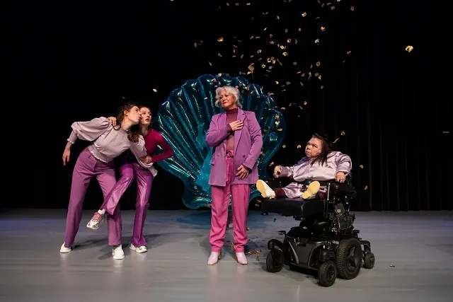
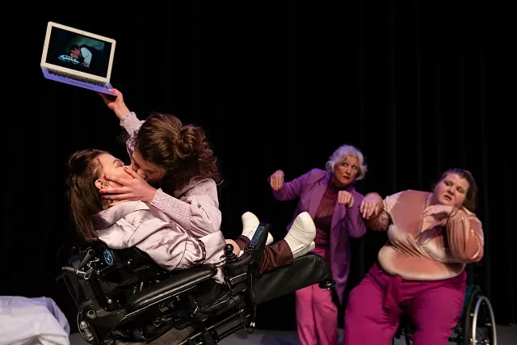
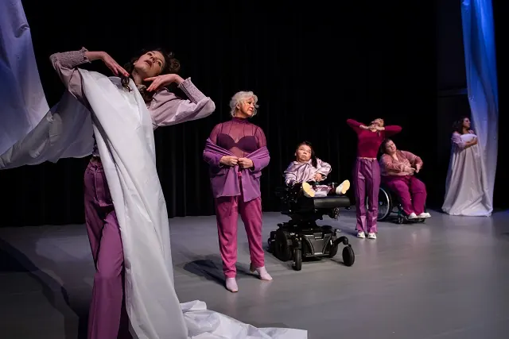
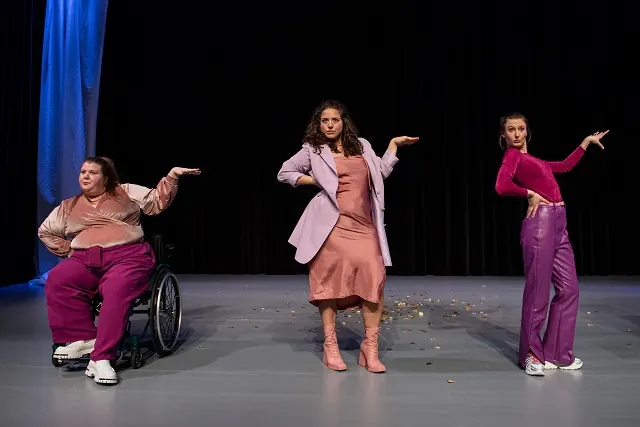

Nieuws ·
Taboedoorbrekende voorstelling ‘USUALLY I’M ON TOP’

Dit bericht uit ons archief verscheen op 26 september 2022 op NieuwsNijmegen.nl. Data, tijden en prijzen kunnen inmiddels anders zijn.
Speels Collectief is een theatergezelschap met een diversiteit aan spelers die op 6 oktober met hun theatervoorstelling USUALLY I’M ON TOP in de Lindenberg staat. USUALLY I’M ON TOP beschrijven zij als een nieuwe definitie van seksualiteit door 7 vrouwen, 6 föhns, 2 plastic schelpen en een tillift. Artistiek leider Sanne Arbouw en speler Marloes Dingshoff vertellen over het gezelschap, de voorstelling en denken in (on)mogelijkheden.

Oprichting Speels Collectief
Speels Collectief bestaat sinds 2014. Ooit begonnen op Hogeschool ArtEZ in Arnhem als een talentontwikkelingsplaats is het gezelschap uitgegroeid tot een professionele speler in het theaterlandschap. De talentontwikkelingsplaats in Arnhem en Tilburg is er nog steeds, maar is nu aangevuld met een company waarmee men langs professionele podia toert. Sanne: “Wij zijn Speels Collectief gestart omdat we vinden dat er verschillende perspectieven op het podium moeten zijn. Ook om publiek met elkaar in verbinding te laten komen en elkaar te ontmoeten. Je wil dat niet alleen een bepaald deel van het publiek zich kan herkennen in een voorstelling, iedereen wil zichzelf gerepresenteerd zien op het podium.”
“Ik heb opeens wielen en daar kun je ook hele leuke dingen mee doen”

Uitsluiting op het podium
Marloes: “Hoe vaak zie je in een professionele voorstelling iemand in een rolstoel? Als je het niet ziet, zal je jezelf minder snel verbonden voelen met theater, laat staat dat het een beroepsoptie is. Voordat ik in 2020 een incomplete dwarslaesie kreeg deed ik als regisseur en actrice veel locatievoorstellingen. Dus op het water, in een weiland. Toen ik die dwarslaesie kreeg zag ik echt mijn toekomst instorten. Ik heb nooit iemand met mijn lichaam op het toneel zien staan in mijn omgeving dus ik dacht: dit is het einde. Toen ik Speels Collectief ontdekte heb ik mijn lichaam als het ware herontdekt. Eerst speelde ik heel fysiek, van mijn tenen tot mijn kruin. Nu heb ik veel meer manieren van expressie moeten uitvinden omdat ik nu eenmaal een lichamelijke beperking heb. Maar dat geeft ook nieuwe mogelijkheden. Ik heb opeens wielen en daar kun je ook hele leuke dingen mee doen! Een lopend lichaam is dus geen vereiste meer om iets duidelijk te maken. Sanne: “En die uitsluiting van mensen die je op het toneel ziet, zit natuurlijk niet alleen in het fysieke, maar ook in etniciteit, in gender, leeftijd et cetera.
Mix van spelers en perspectieven
“Sanne: Wij selecteren bij Speels Collectief onze spelers dus op basis van talent én de thematiek van de voorstelling. Nu we met USUALLY I’M ON TOP een voorstelling maken over seksualiteit en vrouwelijkheid, hebben we bijvoorbeeld iemand in de groep die een master in genderstudies heeft, maar er is ook een intimiteitscoach en sekswerker die vanuit dat perspectief meespeelt. En een 72-jarige balletdanser. Binnen de norm ben je als danser op oudere leeftijd niet binnen elk dansgezelschap meer welkom. En dus zien we helaas nog te weinig dansers van 70+ op het podium gerepresenteerd. Zo brengt Marloes door haar gedeeltelijke dwarslaesie ook weer een ander perspectief op seksualiteit mee. Ons gezelschap bestaat dus echt uit een mix van spelers.” Marloes: “Iemand die een hele nieuwe blik op seksualiteit heeft is dus net zo waardevol als iemand die perfect een monoloog kan presenteren.”
Seksualiteit in al haar vormen
In USUALLY I’M ON TOP trekt Speels Collectief het seksuele ideaalbeeld van haar sokkel. Heersende normen van vrouwelijkheid en seksualiteit bevraagd. Kwetsbaar en grotesk, in woord en in lijf, nemen zeven vrouwen je mee in hun ervaringen en verlangens. De voorstelling is tot stand gekomen na een lange zoektocht naar wat seksualiteit nou eigenlijk betekent.
Sanne: “Ik ben begonnen met opzoeken wat er nu eigenlijk onder seksualiteit wordt verstaan. En dan lees je in de Van Dale: ‘Alles wat geslachtsverkeer betreft”. Dat vond ik zo’n beperkte blik daarop en daarin miste ik zelf diverse perspectieven.” Speels Collectief heeft het er niet bij laten zitten en Van Dale heeft het begrip inmiddels aangepast. “Sanne: Maar dat is niet het enige. Ook als je de gemiddelde clip van Beyoncé bekijkt, zie je toch vooral één bepaalde groep dansers. En in een romantische komedie zie je nog steeds een standaard man-vrouwbeeld, terwijl er zo veel meer perspectieven op seksualiteit zijn die het verdienen om gehoord te worden.”
“Er wordt van uitgegaan dat seksualiteit bij mensen met een beperking niet bestaat”
Marloes: “Ik woon zelf bij een grote organisatie voor mensen met een beperking en je merkt ook daar dat er te vaak vanuit wordt gegaan dat seksualiteit bij mensen met een beperking niet bestaat. Dat mensen daar geen behoefte aan hebben terwijl het er gewoon is. En dat ze net zoals ieder ander seksuele gevoelens hebben. Dit begint al bij de opleiding voor toekomstige hulpverleners. Als daar niet het taboe doorbroken wordt, zal er heel krampachtig met het thema om blijven gegaan.”

Omvergooien van heersende ideaalbeelden
Sanne: “Die heersende ideaalbeelden gooien we echt omver. Zo hebben we onze eigen Britney Spears clip, zie je Disney en de Venus van Botticelli voorbijkomen. En onze persoonlijke ervaringen sijpelen hier tussendoor. In beeld, dans en gesprekken op toneel. Marloes: “Bijvoorbeeld als we een brief van ons lichaam voorlezen, dat is heel intiem.” De pauze bleek uiteindelijk ook een bron van inspiratie. Sanne: “Dan kwam ik de kantine inlopen en was er weer een gesprek gaande over vibrators of iets dergelijks. Doordat we zo’n diverse groep spelers hebben, had iedereen daar ook andere ervaringen mee. De voorstelling is dus ook echt op de vloer ontstaan”.
Marloes: “Het is dus allemaal niet zo zwaarmoedig als het in eerste instantie misschien lijkt. Er zit juist veel humor in het stuk! Het is echt een afwisseling van grotesk en intiem, absurd en heel persoonlijk en kwetsbaar.”
Praktische informatie
USUALLY I’M ON TOP is op 6 oktober om 20.00 uur te zien in de Lindenberg. Kaarten zijn verkrijgbaar via de website van de Lindenberg: www.delindenberg.com
Adres
Ridderstraat 23
6511 TM Nijmegen info@delindenberg.com
024 327 39 11
Volg ons ook op
Twitter: @deLindenberg Facebook.com/LindenbergNijmegen
Instagram.nl/delindenbergnijmegen